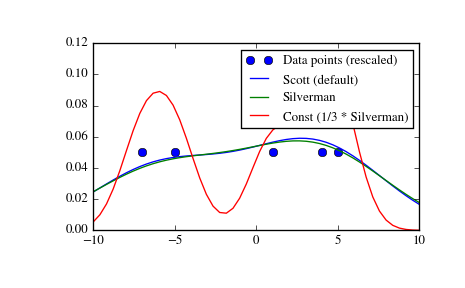

scipy.stats.gaussian_kde.set_bandwidth¶
- gaussian_kde.set_bandwidth(bw_method=None)[source]¶
Compute the estimator bandwidth with given method.
The new bandwidth calculated after a call to set_bandwidth is used for subsequent evaluations of the estimated density.
Parameters: bw_method : str, scalar or callable, optional
The method used to calculate the estimator bandwidth. This can be ‘scott’, ‘silverman’, a scalar constant or a callable. If a scalar, this will be used directly as kde.factor. If a callable, it should take a gaussian_kde instance as only parameter and return a scalar. If None (default), nothing happens; the current kde.covariance_factor method is kept.
Notes
New in version 0.11.
Examples
>>> import scipy.stats as stats >>> x1 = np.array([-7, -5, 1, 4, 5.]) >>> kde = stats.gaussian_kde(x1) >>> xs = np.linspace(-10, 10, num=50) >>> y1 = kde(xs) >>> kde.set_bandwidth(bw_method='silverman') >>> y2 = kde(xs) >>> kde.set_bandwidth(bw_method=kde.factor / 3.) >>> y3 = kde(xs)
>>> import matplotlib.pyplot as plt >>> fig, ax = plt.subplots() >>> ax.plot(x1, np.ones(x1.shape) / (4. * x1.size), 'bo', ... label='Data points (rescaled)') >>> ax.plot(xs, y1, label='Scott (default)') >>> ax.plot(xs, y2, label='Silverman') >>> ax.plot(xs, y3, label='Const (1/3 * Silverman)') >>> ax.legend() >>> plt.show()
